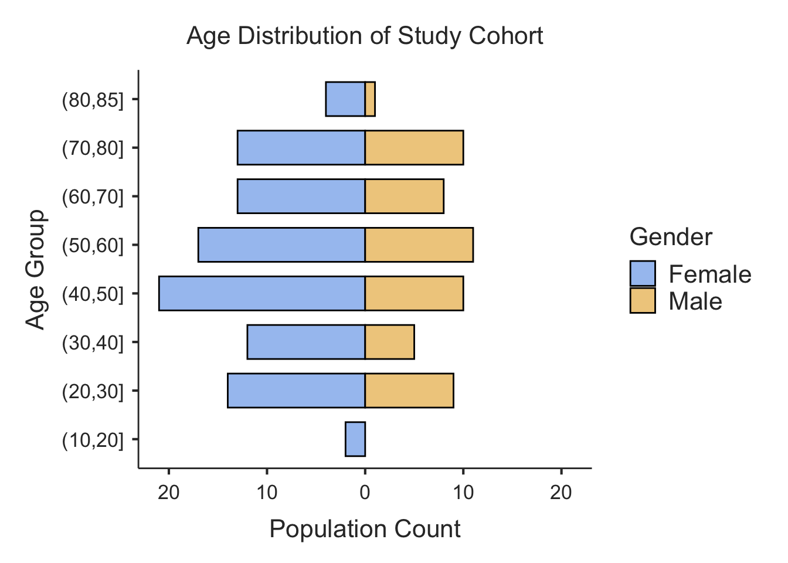

# Create a sample data frame
set.seed(123) # for reproducibility
cohort_data <- data.frame(
patient_id = 1:150,
age = sample(20:85, 150, replace = TRUE),
gender = sample(c("F", "M"), 150, replace = TRUE, prob = c(0.6, 0.4))
)
# View the first few rows
head(cohort_data)
#> patient_id age gender
#> 1 1 50 M
#> 2 2 70 F
#> 3 3 33 F
#> 4 4 61 F
#> 5 5 69 F
#> 6 6 62 FVignette: Creating an Age Pyramid with ClinicoPathDescriptives
2025-06-09
Source:vignettes/agepyramid.qmd
# This code simulates how the jamovi module would be called in an R environment.
# You would need the ClinicoPathDescriptives package installed.
# Load the library
library(ClinicoPathDescriptives)
#> Registered S3 method overwritten by 'future':
#> method from
#> all.equal.connection parallelly
#> Warning: replacing previous import 'dplyr::select' by 'jmvcore::select' when
#> loading 'ClinicoPathDescriptives'
# Run the age pyramid analysis
results <- agepyramid(
data = cohort_data,
age = "age",
gender = "gender",
female = "F", # Specify that 'F' represents females
bin_width = 10, # Use 10-year age bins
plot_title = "Age Distribution of Study Cohort"
)
# To view the results:
# View the summary table
print(results$pyramidTable)
#>
#> Population Data
#> ────────────────────────────────
#> Population Female Male
#> ────────────────────────────────
#> (80,85] 4 1
#> (70,80] 13 10
#> (60,70] 13 8
#> (50,60] 17 11
#> (40,50] 21 10
#> (30,40] 12 5
#> (20,30] 14 9
#> (10,20] 2 0
#> ────────────────────────────────
# View the plot
print(results$plot)